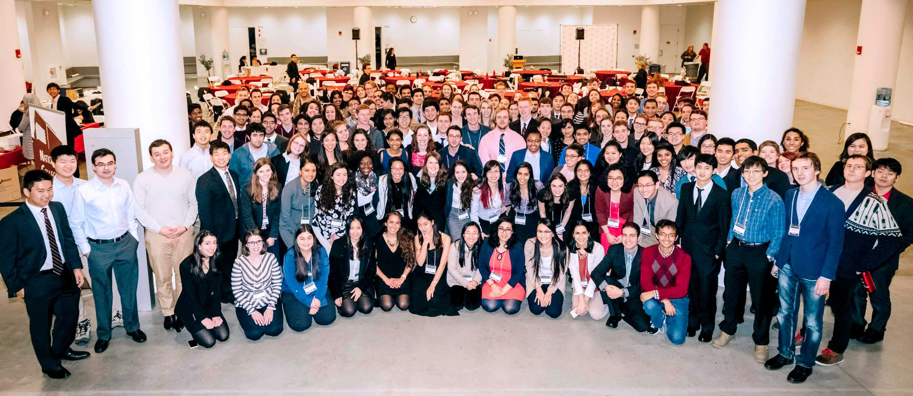

The Need For Research Communities
Aliquam massa urna, imperdiet sit amet mi non, bibendum euismod est. Curabitur mi justo, tincidunt vel eros ullamcorper, porta cursus justo. Cras vel neque eros. Vestibulum diam quam, mollis at magna consectetur non, malesuada quis augue. Morbi tincidunt pretium interdum est. Curabitur mi justo, tincidunt vel eros ullamcorper, porta cursus justo. Cras vel neque eros. Vestibulum diam.
Vestibulum diam quam, mollis at consectetur non, malesuada quis augue. Morbi tincidunt pretium interdum. Morbi mattis elementum orci, nec dictum porta cursus justo. Quisque ultricies lorem in ligula condimentum, et egestas turpis sagittis. Cras ac nunc urna. Nullam eget lobortis purus. Phasellus vitae tortor non est placerat tristique.
What Our Organizations Provide
In vestibulum massa quis arcu lobortis tempus. Nam pretium arcu in odio vulputate luctus. Suspendisse euismod lorem eget lacinia fringilla. Sed sed felis justo. Nunc sodales elit in laoreet aliquam. Nam gravida, nisl sit amet iaculis porttitor, risus nisi rutrum metus.
- Faucibus orci lobortis ac adipiscing integer.
- Col accumsan arcu mi aliquet placerat.
- Lobortis vestibulum ut magna tempor massa nascetur.
- Blandit massa non blandit tempor interdum.
- Lacinia mattis arcu nascetur lobortis.
History
In January 2015, student leaders of undergraduate research associations across 11 university campuses gathered at Harvard University to take part in the National Collegiate Research Conference (NCRC). NCRC 2015 marked the launching of the first series of Steering Committee Meetings for Undergraduate Research Leaders. The inaugural 2015 meetings allowed motivated undergraduate researchers interested in creating or developing an undergraduate research organization on their campus to meet each other in person. Fascinating discussions about how we might find more effective ways to form productive networks of college researchers across the world led to the birth of the Association for Undergraduate Research Advancement (AURA). AURA is an ongoing collaborative effort amongst undergraduates who are determined to form an international network of undergraduate researchers to facilitate important discussions about undergraduate research. We are committed to developing materials and resources that will be helpful to other undergraduates interested in research.
As part of AURA's nationwide network, the Yale Undergraduate Research Association (YURA) was founded in January 2015 to form a strong undergraduate research community and network on campus. We believe in building lasting connections between students and research by building a community around interdisciplinary research at Yale. Since our launch, we have grown to over 200 members, and we will host our first campus-wide research conference, the Yale Undergraduate Research Symposium (YURS), on September 7th, 2015.
